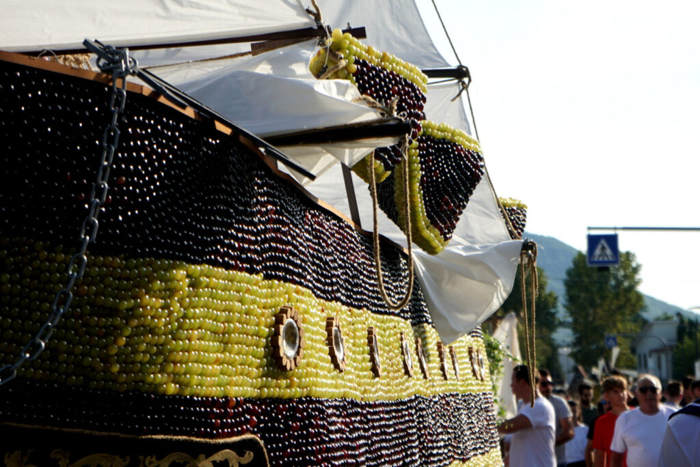
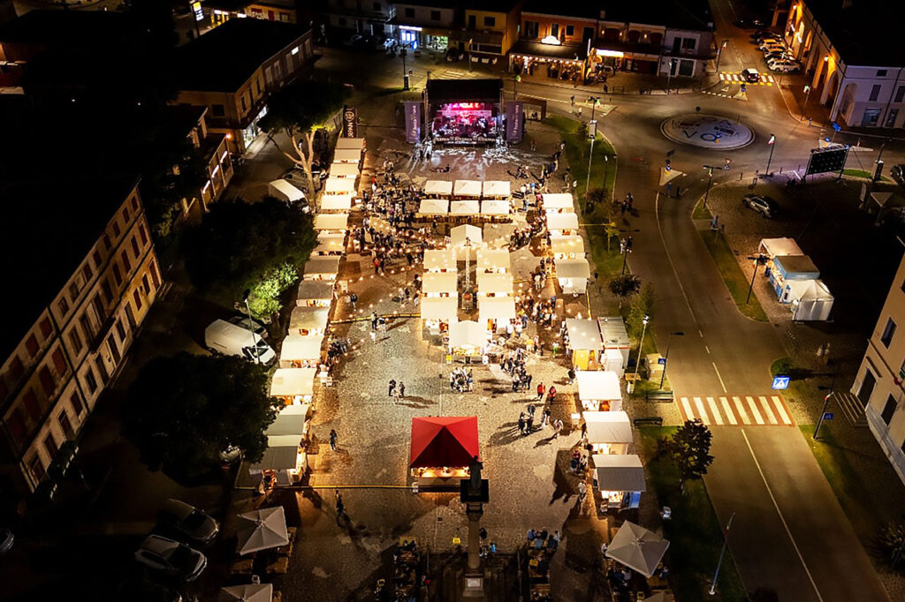
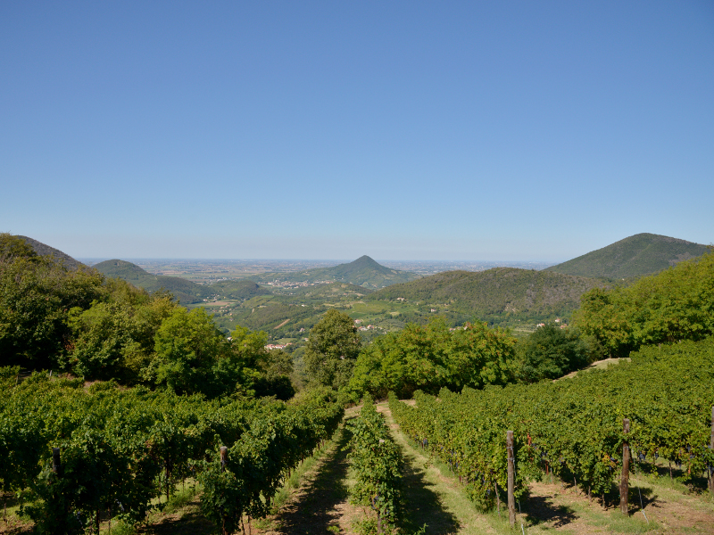

花车巡游
最值得看的画面
花车从 Consorzio Agrario 出发，最后进入 Piazza Liberazione。全家不用沿整条路线追，提前在中心附近找一个能看见的位置即可。

9月20日 · 周日 · 离 Torreglia 约20分钟
全家会看到用葡萄主题装饰的花车、当地人穿着服装巡游、19家酒庄集中摆摊，以及广场上从下午一直持续到夜里的吃喝和音乐。
从 Dolomites 回来后先在 villa 休息，15:00左右再去。先看 15:30 白天花车，之后在 Villaggio DiVino 吃喝；19:30还舒服的人可以留下，不想熬夜的人先回家。不需要四个人从早上待到午夜。
把它想成“村镇嘉年华＋葡萄丰收＋露天 wine tasting”，不是坐下来听两小时专业讲解。
最值得看的画面
花车从 Consorzio Agrario 出发，最后进入 Piazza Liberazione。全家不用沿整条路线追，提前在中心附近找一个能看见的位置即可。

吃喝 · 10:00–24:0019家酒庄＋6个食物摊
先买 €15 tasting kit，含杯子、杯套和8个“Chicchi d’Uva”代币；先绕一圈再决定喝什么，不要一进场就把代币用完。

可选 · 不必硬做小火车串五家酒庄
如果 9月19日周六另有空，再考虑这个。周日已经有花车和 wine village，不建议同时把酒庄小火车也塞进去。
这是从 Alta Badia 早上退房返回后的现实版本，保留洗澡、休息和改变主意的空间。
酒店早餐后直接走；途中只停服务区咖啡和简餐，不安排景点。
卸行李、洗澡、喝水、躺一会儿。不要一回来就继续开去 Vo’。
导航 Piazza Liberazione 周边官方/临时停车；预留步行和找位置时间。
站定看完整一轮，不需要跟着花车跑。人多时把手机和钱包放好。
两人可以买一套先分享判断口味；驾驶者少喝，重点试 Serprino 和 Fior d’Arancio secco。
选 cicchetti 和单份小吃，不要追求正式餐厅。坐下后再决定是否留下。
还有精神就喝一杯 spritz；这时已经完成最值得的部分，随时可以回家。
灯光下花车会再巡游一次。想看的人留下即可，不必要求四个人为了“来都来了”一起硬撑。
当天回程和天气都可能影响体力，直接选一个，不需要临场纠结。
白天花车＋wine village＋摊位晚饭。信息量和体力最平衡。
先在 villa 睡觉，只做 wine village、spritz 和20:30夜场。
回家洗澡吃饭。丰收节是加分项，不值得用 Dolomites 回程后的疲惫去换。
06:30日出音乐会太早；15:00踩葡萄主要面向儿童；22:00 DJ set 对刚从山里开车回来的人不值得。把体力留给白天花车和当地酒庄即可。
节目、时间、酒庄数量与 tasting kit 核对自 Festa dell’Uva 官方网站及其 Villaggio DiVino 页面。